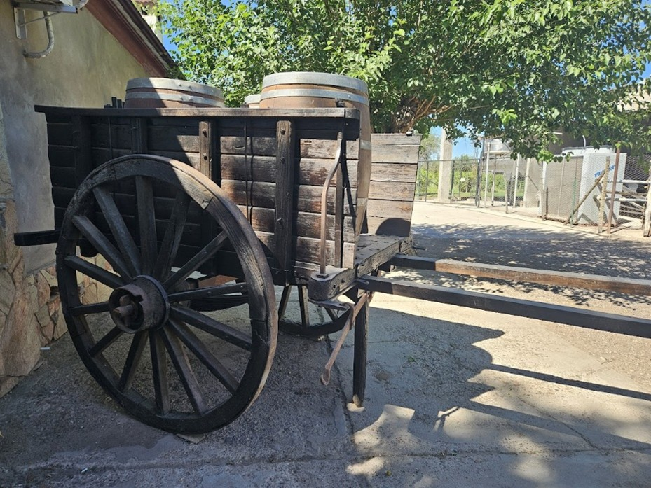
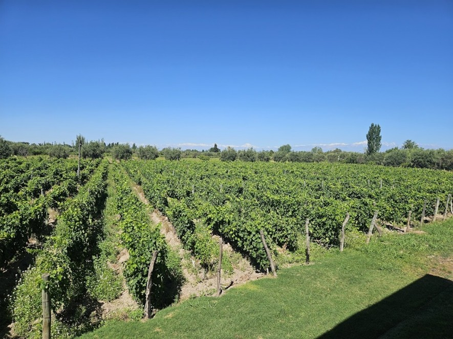
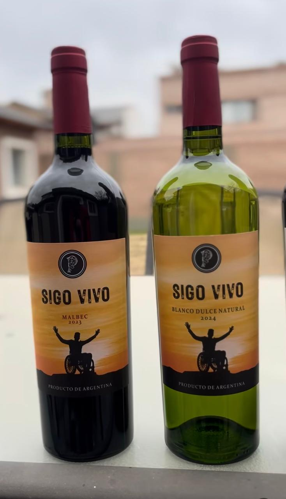

Localizada sobre Ruta Provincial 60, a 100 metros al oeste de calle Cura. Fue construida en 1941, aunque los viñedos datan de 1910. El conjunto conserva parte de sus construcciones originales y está integrado por el edificio productivo y la antigua casa patronal. La bodega posee una nave principal con cubierta a dos aguas, estructura metálica y chapa de zinc. Sus materiales de construcción constan de hormigón armado, ladrillo cocido y bloques de hormigón.
A lo largo del tiempo, el establecimiento fue ampliado y modernizado mediante la incorporación de nuevos equipamientos y maquinarias. Sin embargo, todavía conserva elementos que permiten reconocer su trayectoria. Entre ellos se destaca una antigua carreta, encontrada abandonada en la finca y posteriormente restaurada con madera proveniente de un viejo camión perteneciente al abuelo del actual responsable de la bodega.
Respecto de su trayectoria histórica, la bodega fue fundada por Santiago Sisques y luego adquirida por Ramón Puppato. Un dato importante para destacar es que aquí funcionó la primera fábrica de jugos concentrado de Mendoza, a partir de un convenio con Rufino Baggio, hace alrededor de 50 años. El Sr. Emiliano Puppato, productor vitivinícola de cuarta generación, es el responsable de la bodega en la actualidad.
Si bien el entorno inmediato es rural, se ubica en la franja urbana que recorre la RP 60 en el distrito, aunque el predio aún se encuentra rodeado de parcelas productivas con vides y olivos. La finca posee 7 ha de uva criolla y ofrece amplias panorámicas a la Cordillera de Los Andes. Esta convivencia entre actividad productiva y expansión residencial permite observar, una vez más, las transformaciones que experimenta el paisaje rural de Los Barriales.
Aunque hace algunos años atrás exportaban su producción, en la actualidad se dedican exclusivamente al mercado nacional, con una presencia importante en provincias como Neuquén y Córdoba. Entre sus vinos se destaca “Sigo Vivo”, nombre que resulta especialmente sugerente para una bodega que ha atravesado distintas generaciones y transformaciones sin abandonar la producción.
En los últimos años, la familia comenzó a adaptar el establecimiento para recibir visitantes y dar a conocer tanto sus vinos como la historia de la bodega. La presencia de animales, cultivos, antiguas construcciones y objetos vinculados al trabajo rural contribuye a conservar el carácter productivo del predio y ofrece la posibilidad de acercarse a un paisaje que todavía mantiene vivas muchas de las prácticas e imágenes asociadas a la tradición agrícola de Los Barriales.


